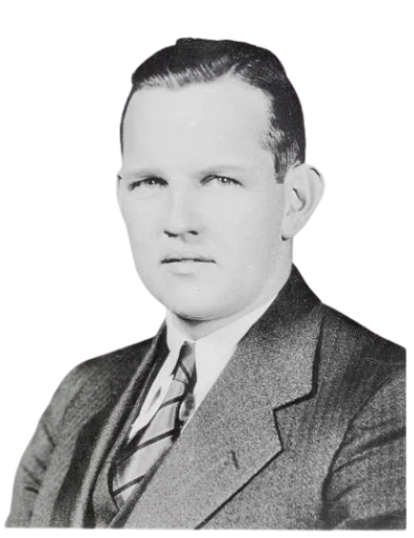
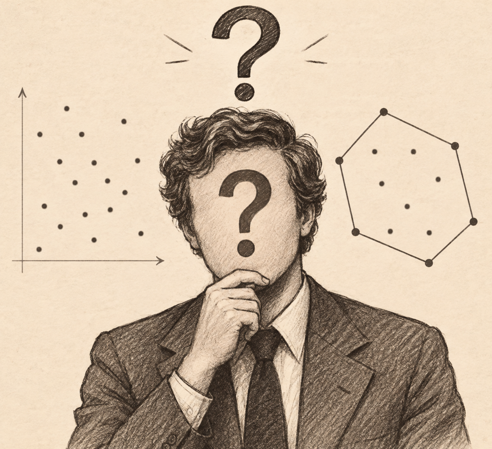
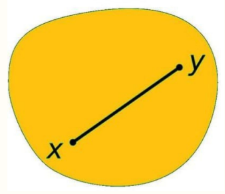
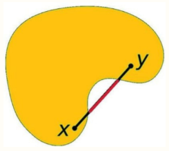
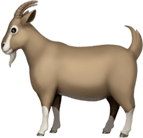

Calcul de l'enveloppe convexe par la méthode diviser pour régner.

Méthode planaire par division, 1977 : le point de départ de QuickHull.

Approche voisine proposée en 1978, de façon indépendante.

Deux points verts reliés par un segment : le segment reste entièrement dans la figure. Tous les segments de ce solide sont dans la figure.

Deux points A et B reliés par un segment : le segment sort de la figure à cause du creux. C'est ce qui rend la figure concave.
Le plus petit ensemble convexe qui contient tous les points : un élastique tendu autour de clous plantés dans une planche.

Pour commencer · Un problème tout simpleUn fermier a perdu le sens de l'orientation… et surtout 12 chèvres en liberté. Il n'a qu'une corde et veut le plus petit enclos possible, sans qu'aucune chèvre ne reste dehors.
Facile à l'œil. Mais comment l'expliquer à un ordinateur ? Spoiler : c'est QuickHull.
12 chèvres, 1 corde, 0 patience.
Trouver les points les plus à gauche (A) et les plus à droite (B). Le segment [AB] coupe l'ensemble en deux.
Chaque côté est traité séparément. On cherche le point C le plus éloigné de la base.
Les points dans le triangle formé avec C sont éliminés. Même traitement sur les deux nouveaux côtés.
Les sommets trouvés forment l'enveloppe convexe finale.
Légende : jaune = S1 · violet = S2 · rose = triangle courant · gris barré = éliminé
| Courbe | Opérations |
|---|
À chaque niveau de récursion, on parcourt les points restants : coût O(n) par niveau. Tout dépend du nombre de niveaux.
Le point C coupe les points en deux moitiés. Il y a log n niveaux, chacun coûte n : T(n) = 2T(n/2) + O(n), donc n × log n.
Le point C ne coupe qu'un seul point à la fois : n niveaux. T(n) = T(n−1) + O(n), donc n + (n−1) + … + 1 = n(n+1)/2.
Complexité moyenne O(n log n) : efficace pour des ensembles de taille moyenne à grande.
Intuitif : basé sur diviser pour régner.
Polyvalent : utilisé dans plusieurs domaines.
Pire cas O(n²) : points alignés ou partage très déséquilibré.
Plus dur à implémenter que Graham à cause de la récursion.
Peu avantageux pour de très petits ensembles.
O(n log n)
Le maniaque. Trie tout d'abord, puis balaie les points.
Cliquer pour découvrir →O(nh)
L'emballeur. Fait le tour des points, comme un papier cadeau. n : points ; h : sommets.
Cliquer pour découvrir →O(n log h)
Le malin. Mélange Graham et Jarvis pour garder le meilleur des deux.
Cliquer pour découvrir →Cliquez sur une carte pour voir l'exemple en action.
Planification de trajectoires et évitement d'obstacles.
Visualisation de nuages de points et identification de groupes.
Détection de collisions et optimisation du rendu 3D.
Simplification des contours d'objets via l'enveloppe convexe.
Délimiter la zone minimale à survoler pour livrer tous les colis.
QuickHull est simple, efficace et polyvalent. Pour les ensembles de points de taille moyenne à grande, c'est un outil puissant en géométrie algorithmique.
Abderrahmane Khayakkoute · Ilyas El Houari · Mossabe Zerradi